What Everyone Should Know About Mechanical Watches
The figures are the talk's slides, live.
Mechanical watches have kept time for 500 years. Many of their core parts were invented even earlier for giant cathedral tower clocks before being shrunk into portable timepieces. This page explains how a modern one works. I personally think it’s fascinating that a purely mechanical device can keep time with 99.99% accuracy for $100. They also changed the world and look good on your wrist.
This presentation was partially inspired by Bartosz Ciechanowski’s Mechanical Watch page. You can think of this page as a simpler introduction or background. When you’re finished with this, that page gives more depth.
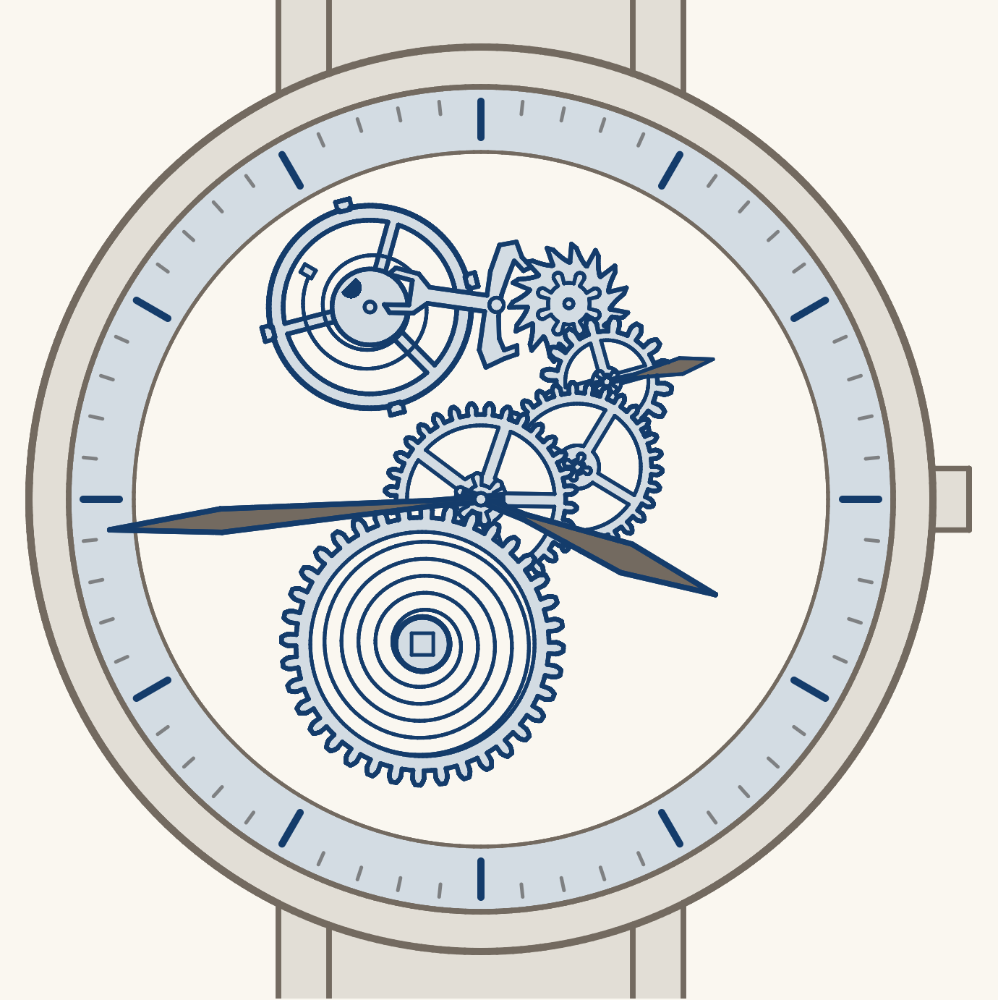
PART 1 Mechanical Marvels
Hairspring
c. 1675
Start with the part that keeps time. In 1675 Christiaan Huygens, a Dutch scientist, invented the hairspring. It is a flat spiral of steel ribbon, finer than a hair. Its outer end is held still, and its inner end is free to turn. Twist the inner end and let go, and the spiral winds and unwinds, back and forth, at a steady rate. In this drawing it swings once every two seconds, and the rest of the watch follows that beat.
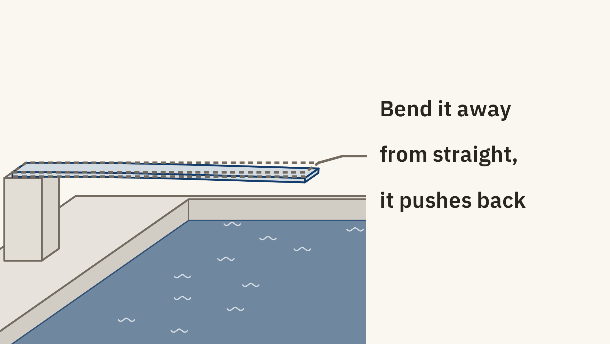
Why does a spring swing? Think of a diving board. Bend it down, and it pushes back: an elastic restoring force. Let go, and it does not stop at straight. It overshoots, bends the other way, and comes back again: it oscillates. With no friction, it would oscillate forever.
A hairspring is a diving board rolled up. The board’s rest shape is a straight line; the hairspring’s is a spiral. Take hold of the slider under the next picture, and drag it to the right.
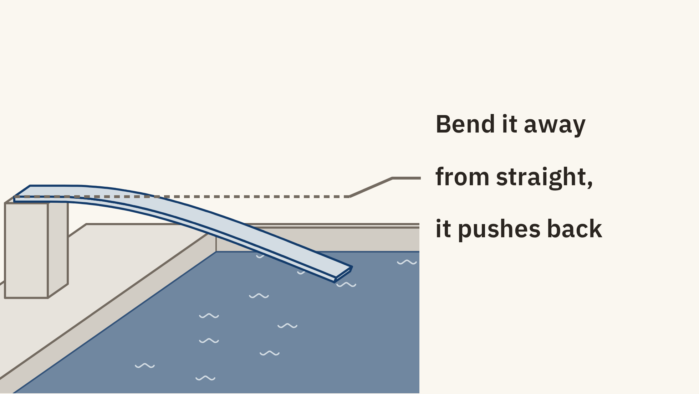
“Bend” becomes “wind”, and “straight” becomes “rest”. Now give the hairspring a twist: drag the slider to wind the spiral away from its rest shape, and let go.
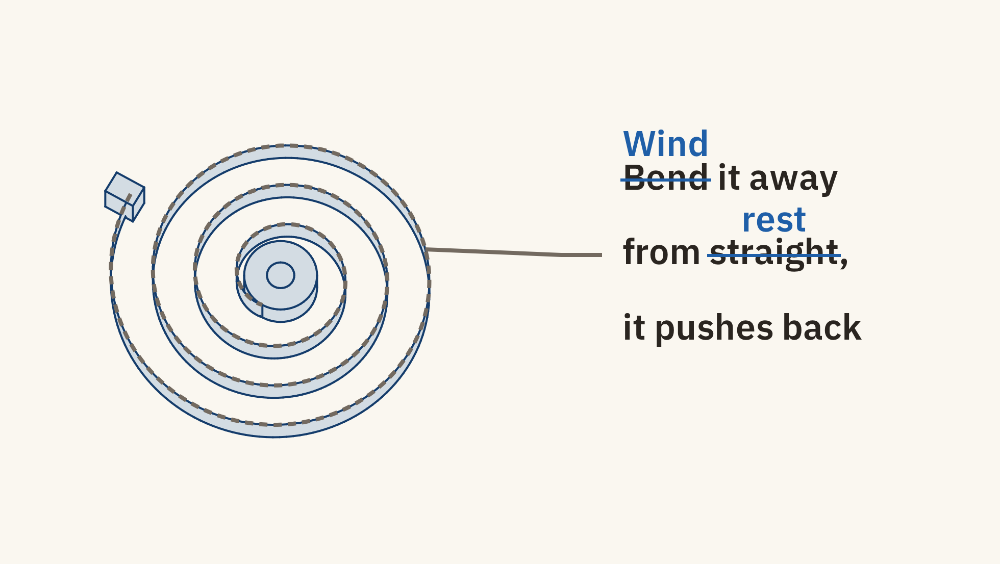
It pushes back. It overshoots and swings, just as the board did. This one move is the whole idea of the hairspring.
Balance Wheel
c. 1364
The hairspring is only half of the timekeeper. The other half is the balance wheel. While most of its mass is around the outside, it is actually fixed to the spring’s inner end. The spring provides the restoring force. The wheel provides the mass and inertia.
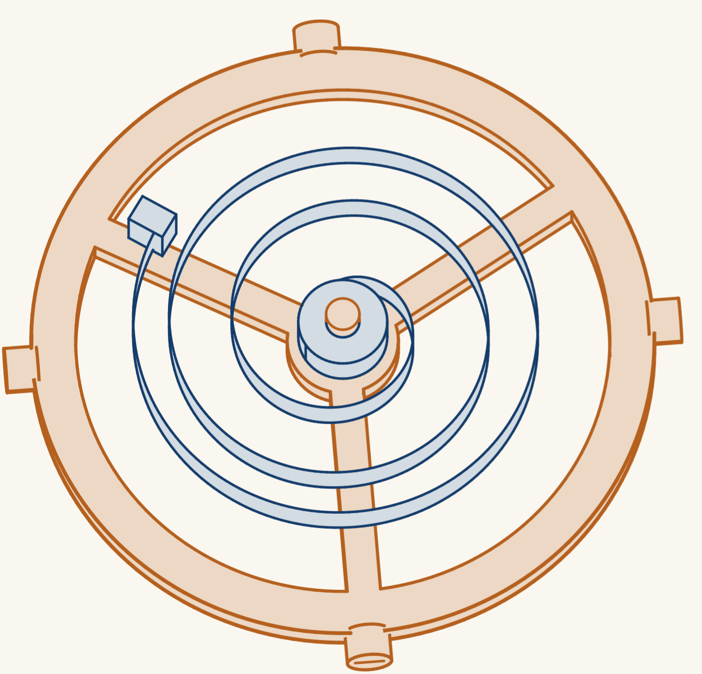
A hairspring alone would oscillate far too fast to count. The wheel slows it to a pace that the gears can count.
Mass also makes the swing steady. Push an empty playground swing, and it jerks about. Put a child on it and it swings much more gracefully. A heavy wheel carries its own momentum, so a knock to your wrist, or turning it upside down, barely changes its rhythm.
How good is it? A well-calibrated mechanical watch, even an everyday Seiko or Citizen, is about 99.99% accurate. A day has 86,400 seconds, so that watch gains or loses about nine seconds a day.
I’m not particularly handy with mechanical things. If I tried to build a table it would wobble because things would be off by a few percent. So it kind of blows my mind that, for $100, I can get a simple, everyday, purely mechanical system and tweak it to be 99.99% accurate!
Escapement
c. 1275
A second hand that just moves back and forth isn’t very useful. We need it to turn one way only. The escapement turns the swing into steps.
The escape wheel is being turned by a mechanism we’ll explain soon, so it’s hidden on this diagram. Without something to stop it, it would just turn and turn.
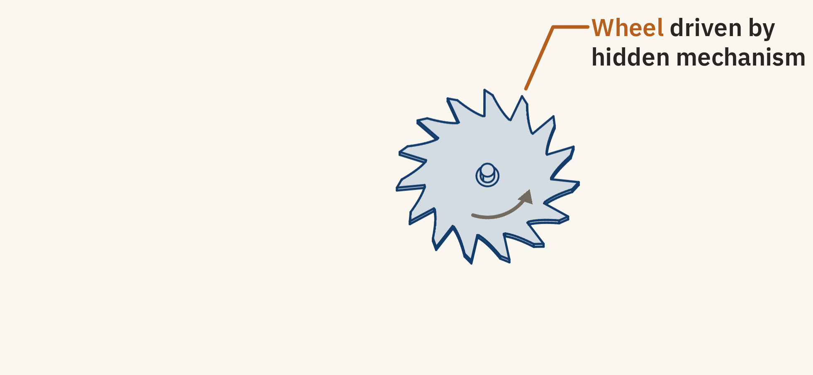
The pallet fork stops it.
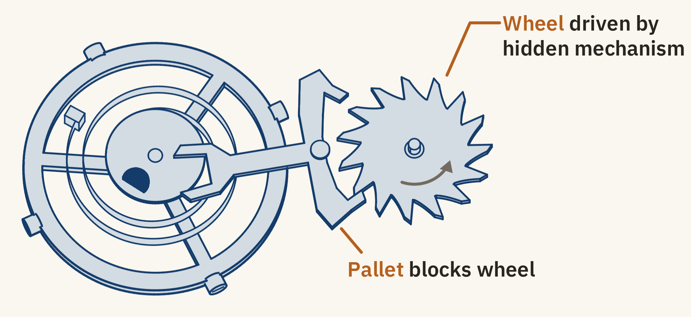
Its two prongs (called stones) stick in the wheel’s teeth: a tooth lands on a stone, and the wheel stops. Each time the fork rocks, one stone lets a tooth go, and the other stone catches the next tooth. The tooth escapes, and that is where the name comes from.
What rocks the fork? The balance does. On its staff is a small impulse jewel, which sits in the notch at the end of the fork. It’s actually a synthetic ruby or sapphire, so it really is a jewel, a precious stone.
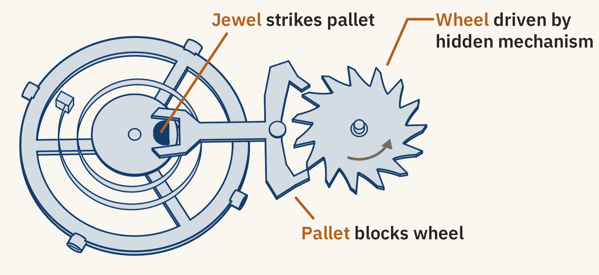
As the balance swings through the middle, the jewel strikes the fork and flips it one way. On the swing back, it flips it the other way.
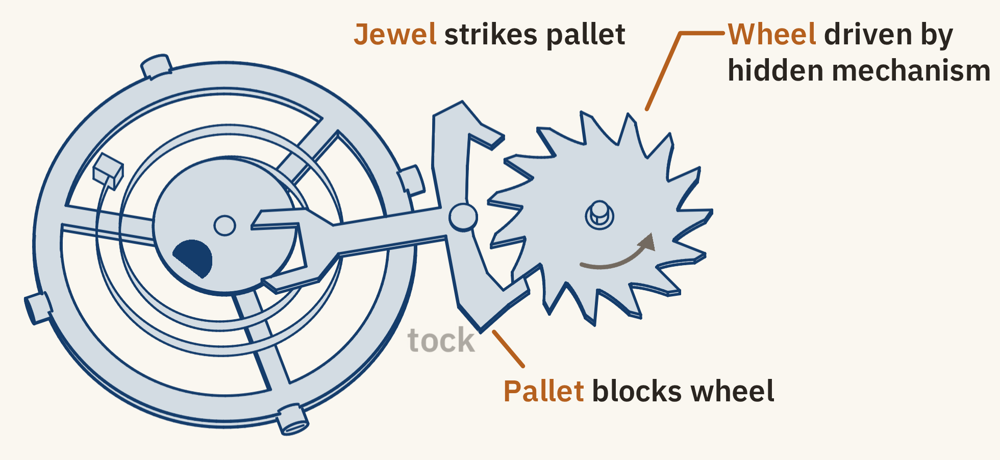
So, at each swing, the balance lets the wheel take one small step. The step ends when the next tooth lands on a stone, hard enough to make a sound, this is the tick and the tock of a watch.
Ticks and Turns
Before we go on, something that trips people up until they think it through. How long does the second hand take to go once around the dial?
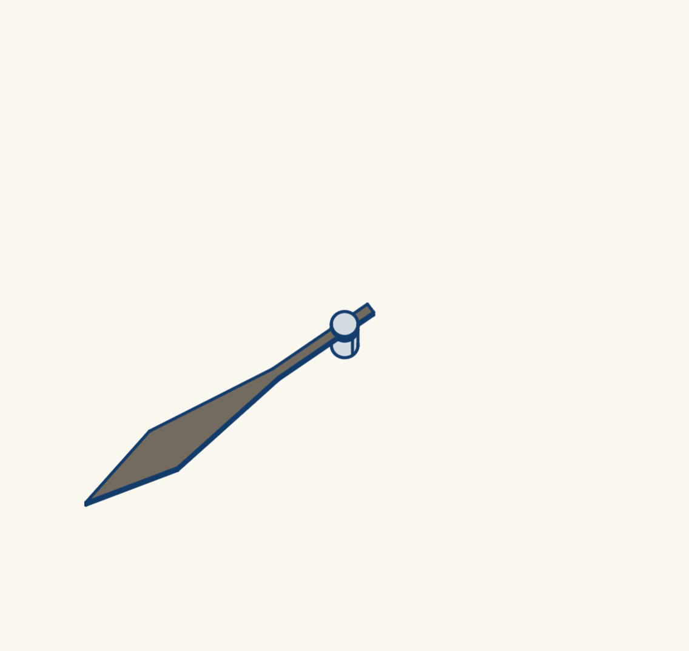
Each tick is one second, and sixty ticks brings it all the way around. So the second hand makes a complete circle once a minute. A hand is named for what it counts, not for how long it takes to make a full 360° turn.
| Hand | A full turn |
|---|---|
| Second hand | Once a minute |
| Minute hand | Once an hour |
| Hour hand | Twice a day |
Gears
Second hand: c. 1670
The escapement gets the escape wheel turning at a precise rate. But the second hand must turn once a minute, and the escape wheel turns faster than that. To convert a faster rotation into a slower one, a watch uses gears: a small gear that meshes with a big one.
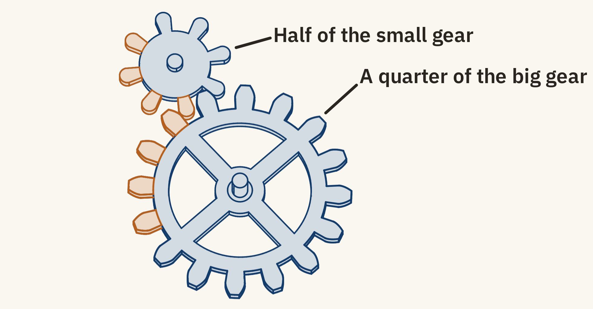
The teeth on the two gears must have the same spacing, so they mesh neatly. Each tooth fits in a gap of the other gear, so the teeth go past each other one for one, and both rims move at the same speed. Four teeth on each gear are colored. Those four teeth are half of the small gear, but only a quarter of the big one. So the small gear turns twice for each turn of the big one: twice the circumference, half the speed.
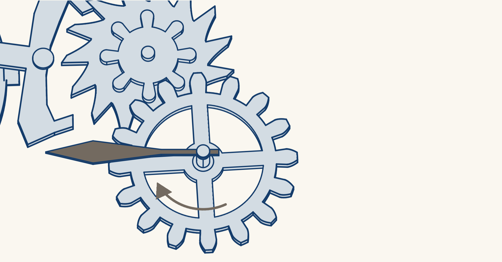
Now attach the smaller gear (called a pinion) to the escape wheel. The gears do not spin freely any more: they move on one tick at a time, with the escape wheel. The escapement controls the speed of the whole train of gears.
The big gear pushing the small gear (pinion) is the force turning the escape wheel. What turns the big wheel? That’s a mechanism we’ll explain soon.
In this watch, the big gear (called the fourth wheel) turns exactly once a minute: just what the second hand needs! So the second hand goes on the big gear’s axle. It is the first part of the watch that we can read.
Gear Train
Minute hand: c. 1656
The second hand turns once a minute. The minute hand must turn once an hour: sixty times slower. So we could try the same trick, and have a gear that’s 60 times bigger than the small gear.
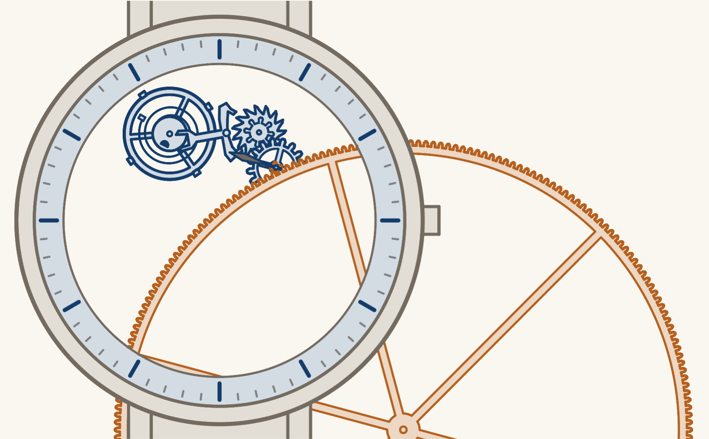
But there’s a limit to how small you can manufacture the small gear, so the big gear would be huge. And it would have a lot of teeth which adds to the cost. Plus, it would turn the wrong way, counterclockwise, because every gear turns the opposite direction from the one it meshes with.
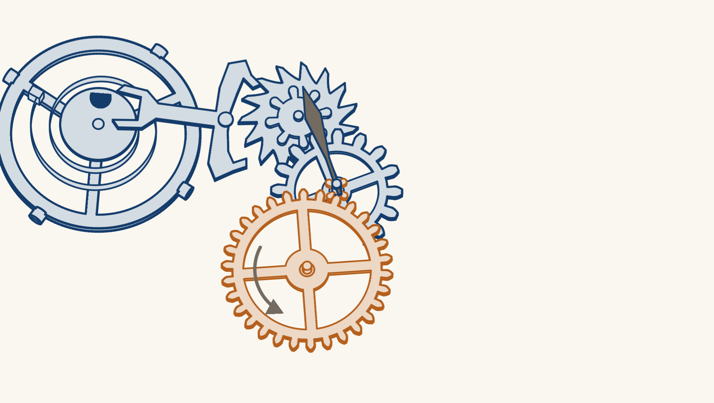
So the watch slows in two stages. The third wheel runs 7½ times slower, and the center wheel runs 8 times slower than that.
7½ times 8 is 60, so the center wheel turns once an hour.
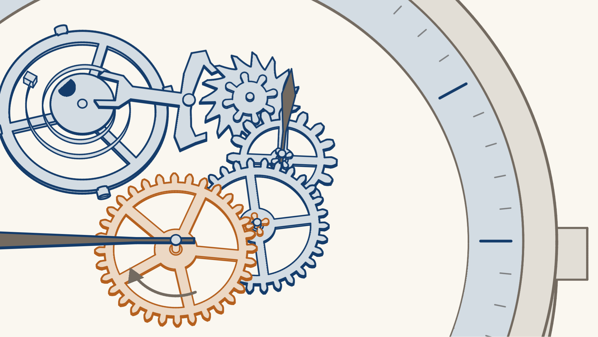
The minute hand goes on the center wheel’s axle (arbor), in the middle of the dial. It makes a full turn once an hour.
The center wheel pushes the third wheel which pushes the fourth wheel which pushes the escape wheel. Next up, the mechanism that pushes the center wheel and powers the whole watch.
Mainspring
c. 1430
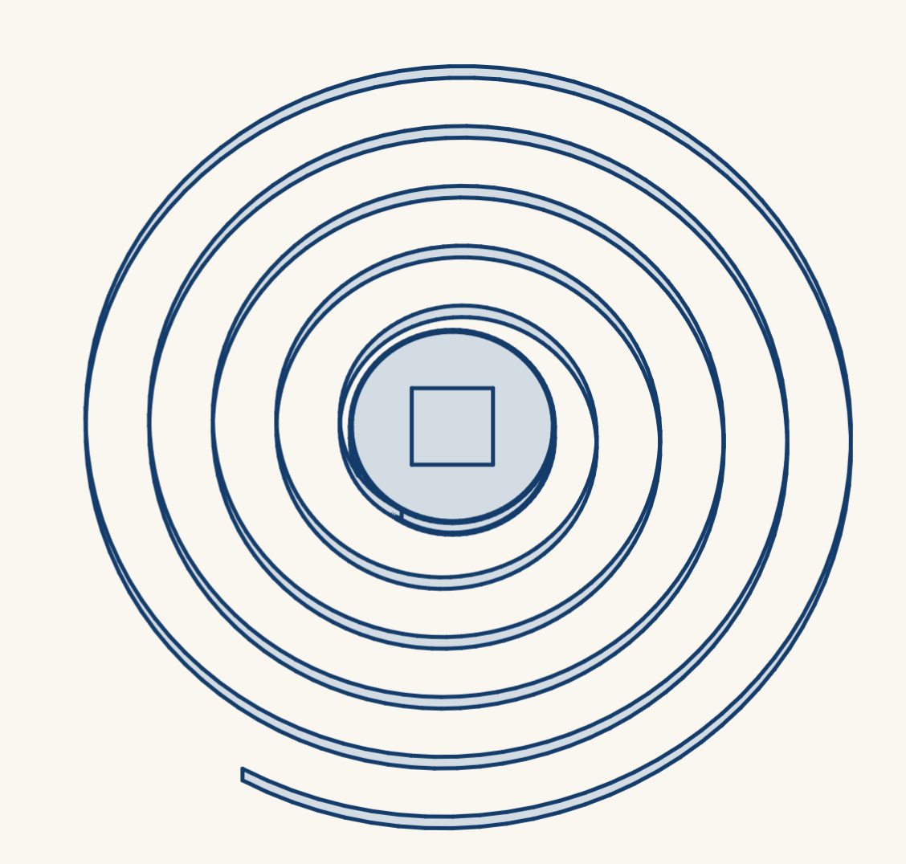
This is a spiral spring, like the hairspring. But instead of swinging back and forth, it does one slow unwind over a day or two. In the illustration above, it’s at rest.
Below, the outer end is held in place. Drag the slider to wind it up. The spring keeps its length, so its coils draw in toward the center.
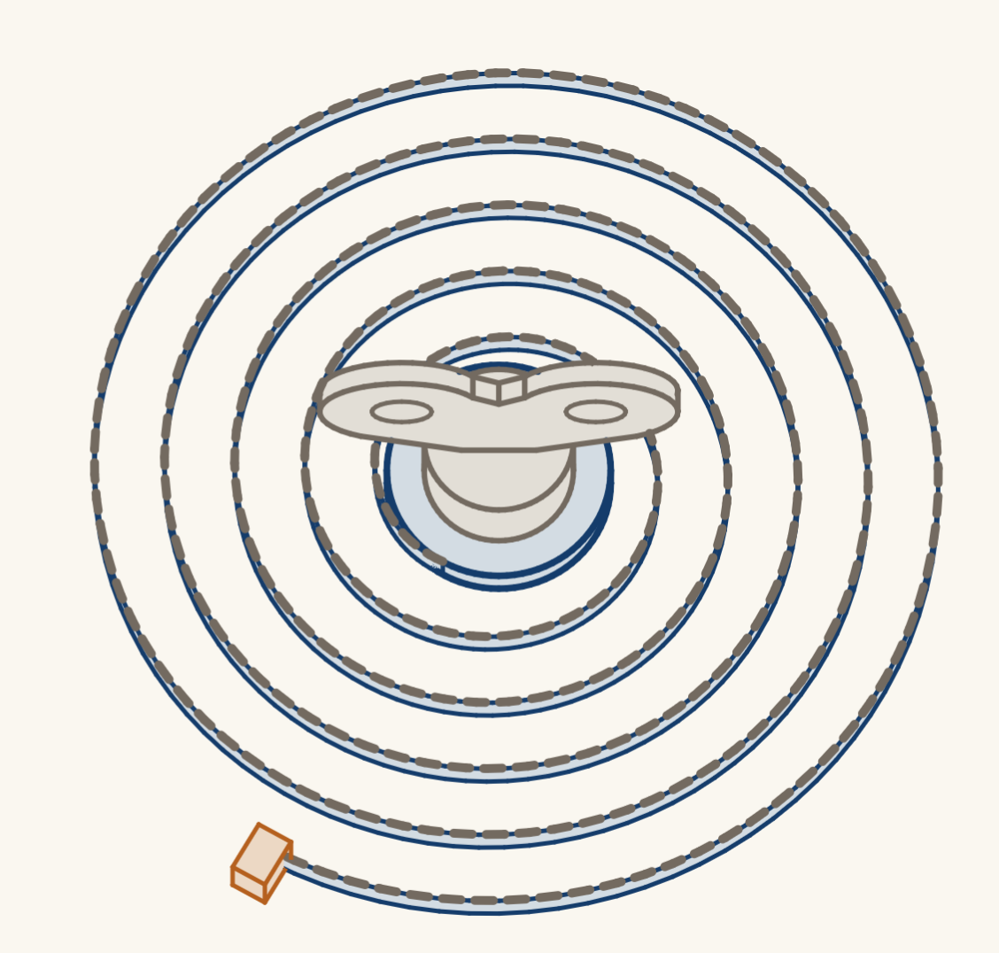
When wound away from its rest shape, the dashed line, it pushes back, as the hairspring does. A tiny one-way ratchet locks the axle (arbor) so it can only turn one way. To unwind the mainspring, let go of the outer end by pressing the button.
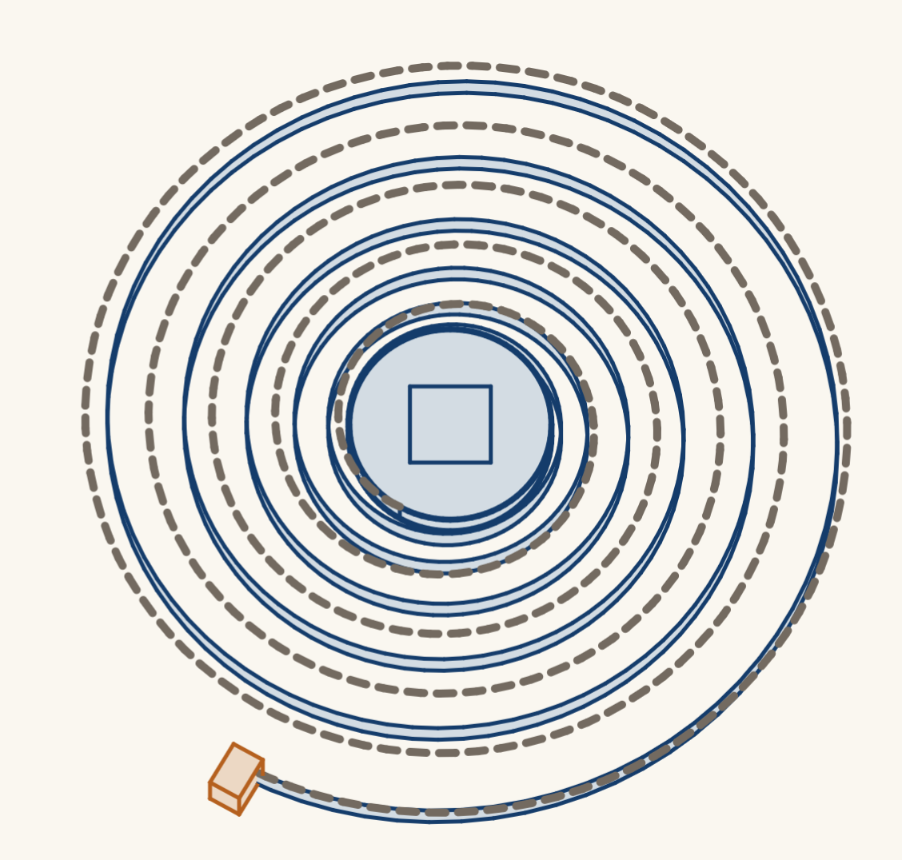
The block is gone, and the outer end swings around until the spring lies on its rest shape again. That fling is the energy that the winding put in.
A watch harnesses that force by attaching the spring’s outer end to a toothed drum called the barrel, invented by Jean-Antoine Lépine around 1760.
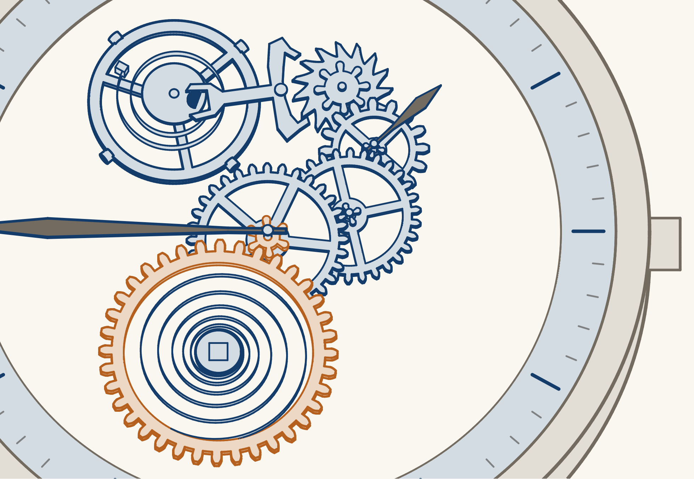
As the mainspring pushes the barrel, the barrel’s teeth drive the gear train we just built. This is the “hidden mechanism” we mentioned earlier.
Because the ratchet stops the arbor from turning backwards, the spring has only one way to unwind: by its outer end turning the barrel. Step the figure forward using the controls under it, and six hours pass in six seconds. The barrel turns once, the minute hand six times, and the coils move back out to the wall. When the spring is completely unwound, the watch stops.
Hour Hand
Hour hand: c. 1350
The hour hand must turn twice a day. That’s once every twelve hours. Unlike the 60:1, a 12:1 gear is doable.
But the hour hand on that wheel’s axle (arbor) is off center! And it would run backward (counterclockwise): a pair of meshing gears turn opposite directions.
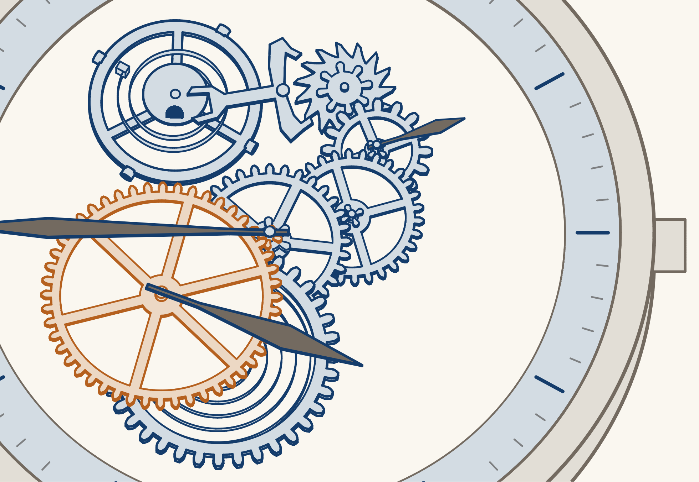
So we use the same two-step trick we used for the minute hand. This time, 3:1 going out and 4:1 coming back. 3:1 × 4:1 = 12:1.
The hour hand goes on the hour wheel, in the middle, under the minute hand, attached to a hollow tube (pipe) that slips over the minute hand’s axle. It turns clockwise, twice a day.
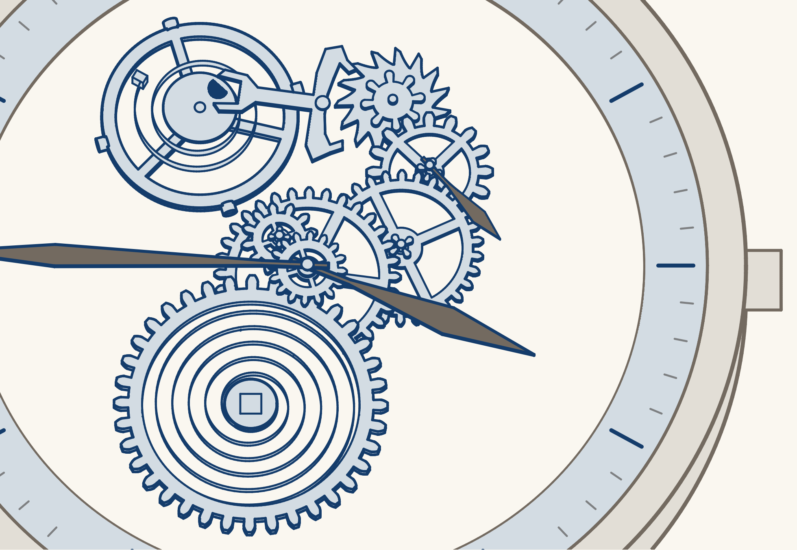
Recap
And that’s how a mechanical watch works!
Here’s a recap, retracing our steps in reverse, from the hour hand to the hairspring. The tour plays by itself, like a short film. The time scale in the corner says how much faster than real time each segment runs.
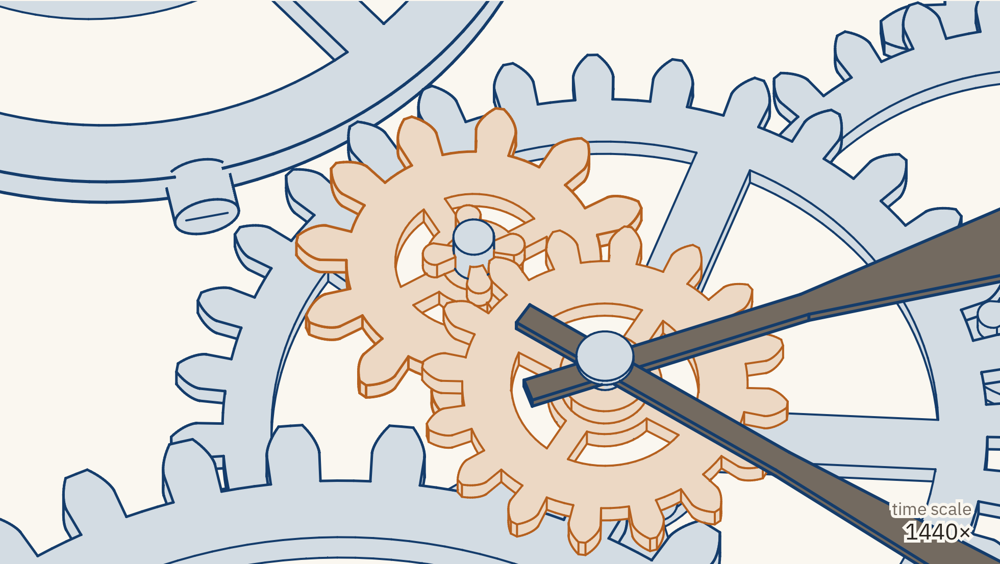
The hour hand is driven by a pair of gears totaling 12:1.
PART 2 Changed The World
Watches and clocks don’t just look good on your wrist, they have also changed the world.
Age of Sail: Longitude Was a Guess
Latitude is how far north or south you are. During the Age of Sail, sailors could find it from the height of the Sun at noon or the angle of the north star. But longitude, your position east or west, they had no good way to estimate and could be off by 400 miles or more.
Hunt for Juan Fernández Island, 1741
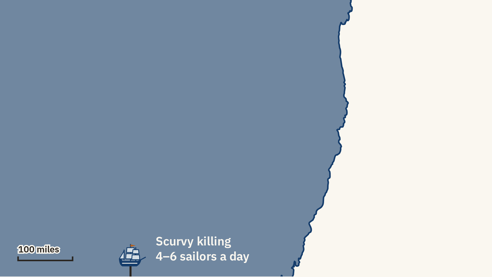
In May 1741, Commodore George Anson’s three ships were low on fresh water and provisions. Scurvy was rapidly spreading, kill four to six sailors a day. They headed for Juan Fernández island, off the coast of Chile. They used a common tactic, sailing north to the correct latitude, then turning and sailing east or west.
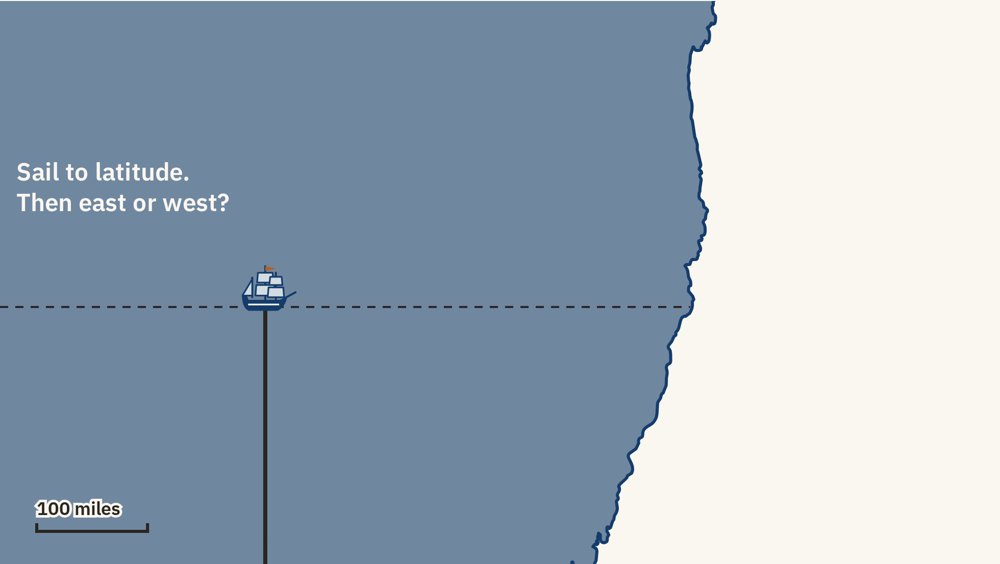
When they reached it’s latitude, they didn’t know whether the island was east or west of them. After Commodore Anson consulted with the officers, they sailed east. Two days later, when they saw land, it wasn’t the island they desperately needed, it was Chile, enemy territory.
They turned around. Headwinds and calms stretched the return journey to nine days, the same distance that had taken two days eastward. A handful of sailors died every day.
At dawn on June 9, they finally saw the island. Not being able to tell their longitude led them on an 11 day detour which cost 70 to 80 lives. They had been only a few hours from the island when they turned the wrong way.
The Longitude Prize, 1714
Prompted by catastrophic maritime disasters, in 1714 Britain’s Parliament passed the Longitude Act. It offered a fortune to anyone who could find a ship’s longitude at sea:
Within one degree, about 70 miles, the prize was £10,000: about $2.3 million in 2026. If you could reduce the error by half, to half a degree or 35 miles, the prize became £20,000: about $4.6 million in 2026.
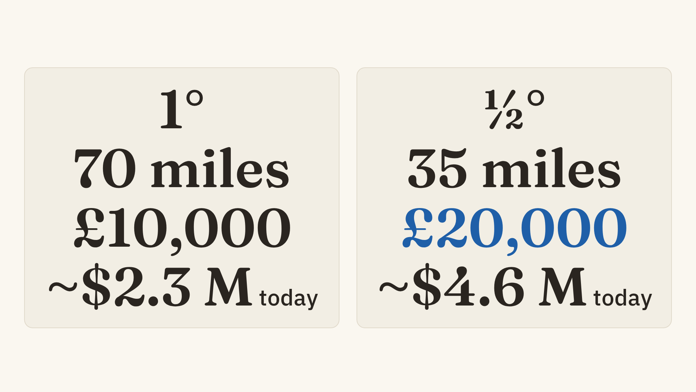
Longitude From Time
What does this have to do with watches? Noon does not come to everyone at once, which is why we have time zones. The Earth turns toward the east. When it is noon at the Royal Observatory in Greenwich, England, (the definition of 0° longitude), a ship 30 degrees to the west has not reached noon yet.
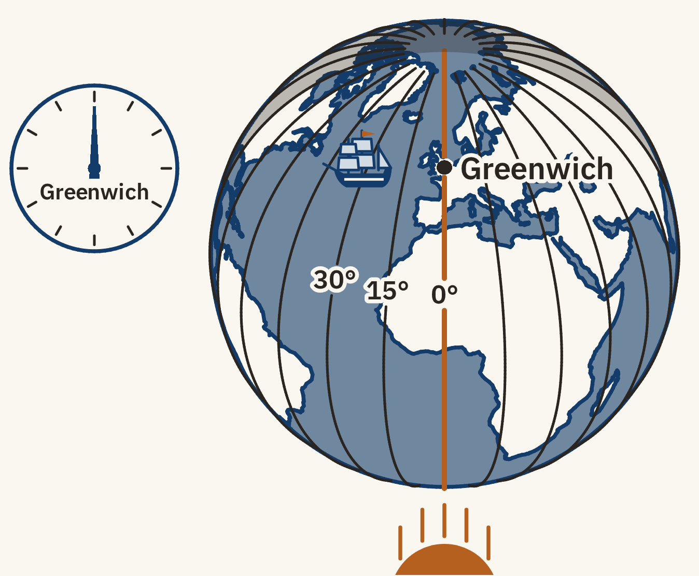
An hour later, the Earth has turned by 15 degrees, one line on this globe. Noon has moved 15 degrees west, and it has not reached the ship yet.
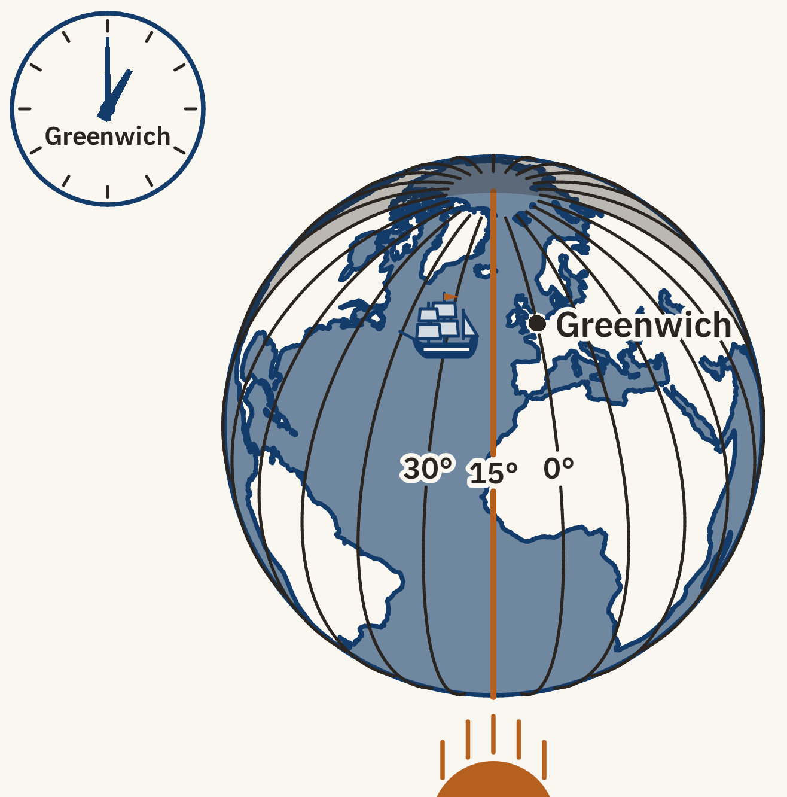
A navigator can measure noon at sea: it is when the Sun stands highest. After a second hour, noon reaches the ship. Suppose that the ship carries a watch that still keeps Greenwich’s time. At the ship’s noon, it reads 2 p.m. Two hours behind Greenwich means 30 degrees west of it.
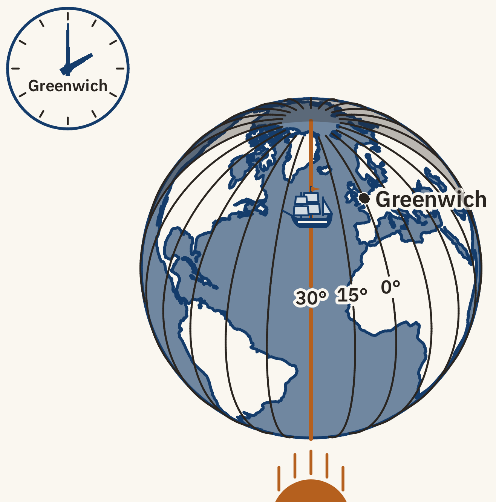
So the watch measures the ship’s longitude. Take the hours behind Greenwich, multiply by 15, and that is how many degrees west the ship is.
How Good a Watch Wins the Prize?
How good must that watch be? Sixty minutes divided by 15 degrees is 4 minutes a degree. So to find the longitude within 1 degree, the clock must be right within 4 minutes. To find it within half a degree, the Act’s top prize, the clock must be right within 2 minutes.
Now take a voyage of 6 weeks, or 42 days. To stay within 4 minutes, the clock can gain or lose only about 6 seconds a day. To stay within 2 minutes, it can gain or lose only about 3. An everyday mechanical watch with today’s materials gains or loses about 9 seconds a day, on dry land. The prize asked for 3, on a rolling ship.
Isaac Newton, 1714
In 1714, the most famous scientist alive, Isaac Newton, weighed in. A watch that keeps time exactly, he said, was one way to find longitude. But:
by reason of the motion of a Ship,the variation of heat & cold, wet and dry,and the difference of Gravity in different Latitudes,such a Watch hath not yet been made.
On land, pendulum clocks were far more accurate, but a ship rolls and pitches, rendering them useless. A watch’s balance swings on a spring instead, but each roll still jolts it.
Heat is worse. As a steel hairspring warms, it gets weaker, and the watch loses about 6 seconds a day for each degree Fahrenheit. Warm it by half a degree, and the prize’s 3 seconds a day are gone. The weather plunges from the tropics to the English cold, and the animal and vegetable oils on all those axles thicken in the cold and go rancid in the heat. And salt spray rusts the steel.
John Harrison: A Carpenter's Side Project
Newton said that such a watch had not yet been made. That same year, John Harrison turned 21, in the north of England. He was a village carpenter by trade, and he taught himself to make clocks.
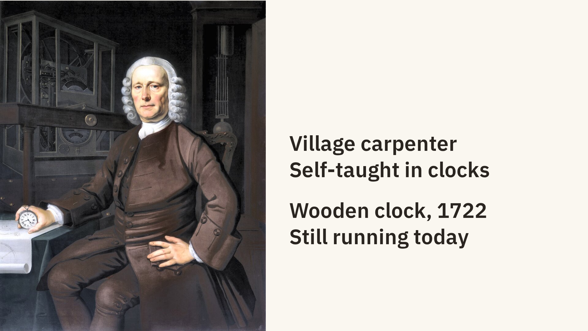
His first clocks, from 1713, were made almost entirely of wood. The oils of his day were poor: they thickened, and a clock had to stop to be cleaned and oiled. So he made clocks that need no oil. Their bearings are lignum vitae, a tropical hardwood that oils itself. In about 1722, for the stable tower at Brocklesby Park in Lincolnshire, he built a wooden clock with a new escapement, the grasshopper, which also needs no oil. That clock still runs, 300 years later.
Same Time, Every Tick
Four clocks, one problem. Each tick is one swing of the balance, and every swing must take the same time, on a rolling ship, hot or cold.
His aim was a clock for the sea that kept time within 3 seconds a day. In 1730, at about 37 years old, he began one at home in Lincolnshire, probably with help from his brother James. It took 5 years. H1 has two linked balances that a ship’s motion does not upset, and runs with no oil at all. To see it move, watch this 30-second clip of H1 at Greenwich.
H1 had its sea trial in 1736: to Lisbon and back. It did poorly on the way out. On the way home, the ship’s master put the ship 60 miles east of where it was, and H1 was right. That won him money for a better clock.
H2 took 2 years. He found a design flaw in its balances: a ship’s turn changes the time of their swing. So he abandoned it for H3. H2 never sailed.
H3 took 19 years, and it never sailed either. The swings of its two large, heavy balances still varied.
But look at what he invented on the way, which we still use today. To cancel the effect of heat, he joined brass and steel in a bimetallic strip, which still works in thermostats. To cut friction, he kept rollers apart in a caged roller bearing, which is now nearly everywhere in machinery.
Then he gave up on big clocks. H4 took 4 years and weighs about 3 pounds: from the outside, a large pocket watch. Its balance is small and fast, with five ticks a second.
In 1761, H4 went on a sea trial.
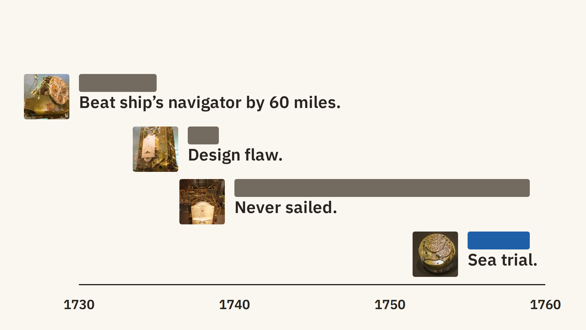
Did Harrison Win the Prize?
Did it win? To win the top prize, the Act asked for a clock that was right within 2 minutes after 6 weeks at sea.
H4 sailed for Jamaica in November 1761. After 81 days, it was 5 seconds slow.
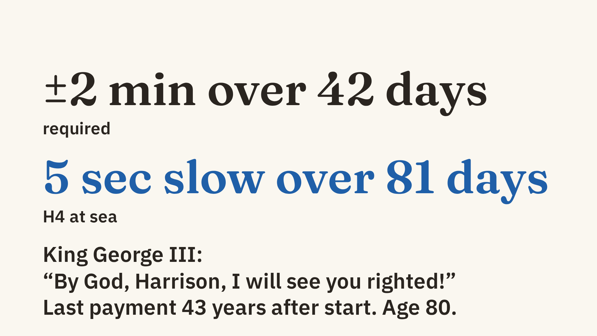
The Board was not convinced, and sent it on a second trial, to Barbados, where it kept time within 39 seconds. In 1765, the Board agreed that it had kept time within the strictest limit of the Act. But the money came slowly: 16 payments over 36 years, £23,065 in all, most of it at the end. The last two payments are more than 70% of the total. The last, £8,750, came in 1773, 43 years after he started. He had appealed to King George III. “By God, Harrison, I will see you righted!” the King told his son William, and Parliament acted. He was 80. He died three years later. The Act’s official prize was never given to anyone.
Providence & Worcester Railroad Disaster, 1853
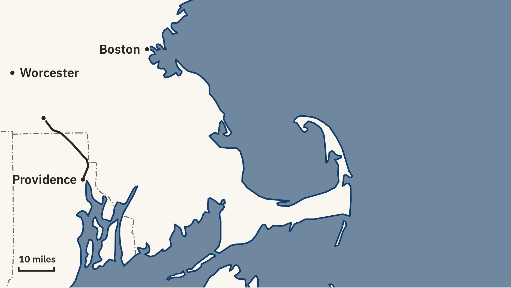
On Friday, August 12, 1853, an excursion train of the Providence & Worcester Railroad left Uxbridge, Massachusetts, with about 475 people, bound for Providence and the beaches of Narragansett Bay. The line had one track. A regular train was coming north out of Providence, and the excursion had to reach the double track at Pawtucket before that train left it.
At Valley Falls, the conductor, Frederick Putnam, looked at his watch. He thought he had time. But his watch was two minutes slow, although he had set it to the company’s time the night before.
Just past a blind curve, near a junction called Boston Switch, the two trains met head-on. The other train had left Pawtucket a minute late. A minute earlier, and it would have been past the curve, in sight of the station.
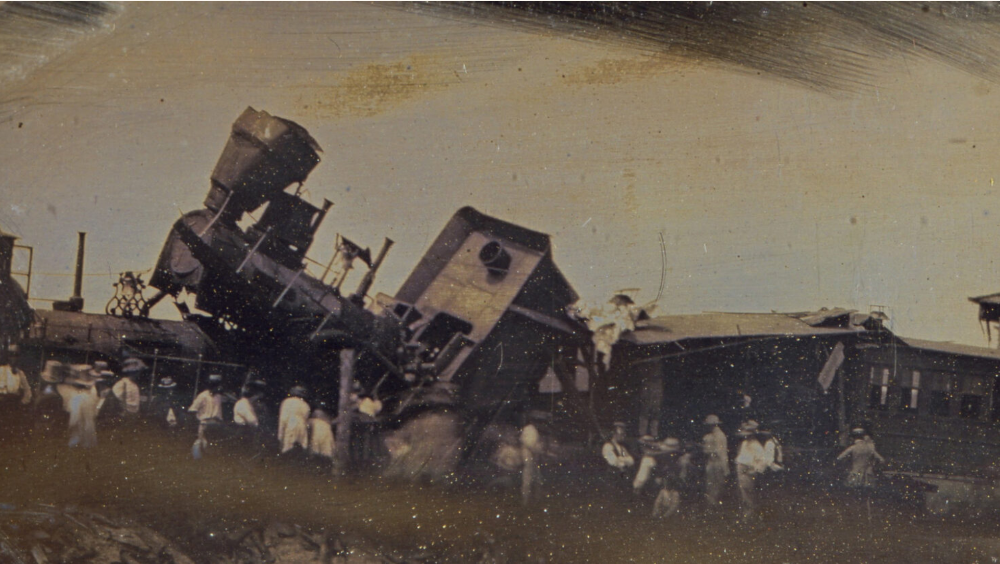
A photographer from Pawtucket, L. Wright, made this daguerreotype soon after. It may be the first photograph of a train wreck.
Fourteen people died, and seventeen were seriously injured.
It was the second crash of its kind that week. Three days earlier, two trains of the Camden & Amboy Railroad had collided near Old Bridge, New Jersey. Four people died. The watches of the two crews were two and a half minutes apart.
The public was outraged, and the railroads changed their rules. Within days, the Boston & Providence Railroad, whose line met this one at Boston Switch, made each conductor have his watch certified as reliable by Bond & Sons of Boston. Bond repaired the watches at the railroad’s cost, and lent a reliable one while a conductor’s watch was in the shop. And the railroads of New England agreed on one time, sent by telegraph from the Harvard College Observatory, in Cambridge: in effect, the first time zone in the United States.
Waltham Watch Company, 1870s
After the crash, railroads bought reliable watches from London, made by hand. The Vermont Central paid $150 each. Around 1850, nearly every good watch was still finished that way: a craftsman filed each part to fit its own watch. If a part broke, a watchmaker had to make a new one, by hand.
Aaron Dennison, a Boston watch repairer, had seen how the Springfield Armory made muskets: by machine, with every part checked against a gauge. Why not watches? With Edward Howard and others, he started a watch company in 1850, and in 1854 it moved to Waltham, six miles up the Charles River from Cambridge. Every part was measured against a master gauge, so a repairer could order a new part by number. In 1876, the factory made 2,200 watches a week.
And the watches were good. Waltham’s everyday watch, the P.S. Bartlett, kept time to within 10 to 15 seconds a day. Before, only a watch fitted by hand kept time that well.
A hand-fitted watch that good could cost $150, about $5,000 in today’s dollars. A P.S. Bartlett cost about $25, about $800 today. An accurate watch became an everyday thing, for railroad workers, soldiers and the general public.
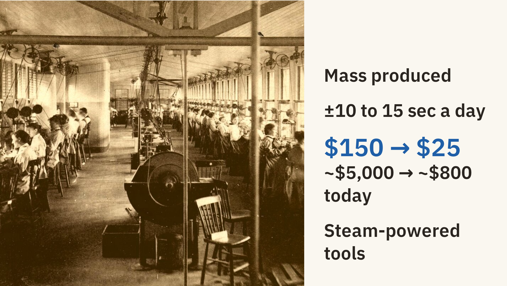
Steam engines turned long shafts under the ceilings, and belts from the shafts drove rows of machines that cut brass and steel finer than a hair. Waltham is still the Watch City, and every Mother’s Day weekend it hosts the Watch City Steampunk Festival. In 1876, a Swiss judge saw Waltham’s machines, went home and told Switzerland to buy machines too.
World War I, Trenches at Night
In World War I, on the Western Front, soldiers lived in trenches, and much of the war happened at night. A soldier on watch needed the time, and in the dark he could not read his watch.
He could strike a match. But a light in a trench gave a sniper a target.
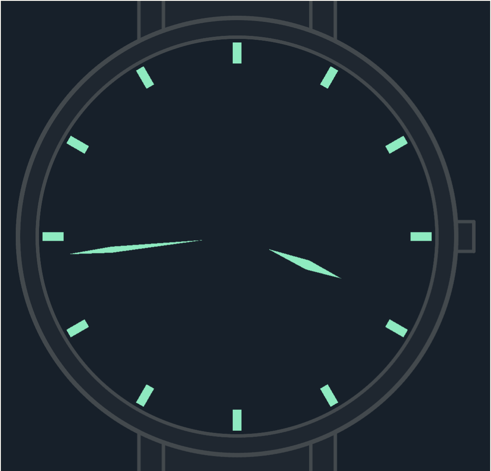
The answer was a paint that glowed by itself. Its secret was radium, an element that Marie and Pierre Curie had found in 1898. Radium gives off radiation, and the radiation makes a crystal mixed with it, zinc sulfide, glow. The U.S. Radium Corporation sold its paint as Undark. On a watch’s hands and hour marks, it showed the time all night, with no light to charge it first. Demand for luminous watches and instruments surged in the war.
Lip, Dip, Paint
Thousands of young women were hired to paint those tiny dials by hand: about 4,000 in the United States and Canada. It was a good job, in bright, clean rooms. They were paid by the dial, about a penny and a half each, and a fast painter did 250 dials in a shift. They were told the paint was harmless. Some painted their nails and their teeth with it, for fun.
The numbers were tiny, so the brush needed a fine point, and after a few strokes its bristles spread. So their supervisors taught them to point it with their lips: lip, dip, paint. With every dial, they swallowed a little radium.
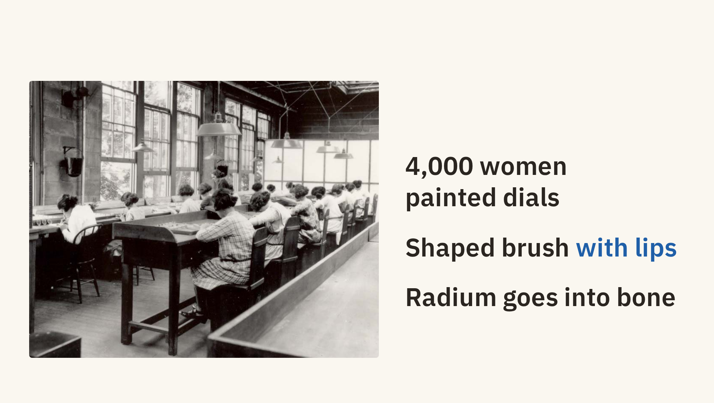
The body takes radium for calcium, and builds it into bone. There it stays, and its radiation works from inside, for years. First the teeth ached and came loose. Then the jaw rotted, and some of the women got bone cancer.
Bones That Glow
In 1922, Mollie Maggia, a dial painter, died. Her teeth had come out, and her jaw had rotted: when her dentist touched it, the bone came away in his hand. Her death was put down to syphilis. For years, the company would point to that.
More painters fell ill. In 1924 the company asked Cecil and Katherine Drinker, of Harvard’s School of Public Health, to look at its plant in Orange, New Jersey. They found radium dust everywhere, and on the painters themselves: in the dark, the women glowed. The Drinkers’ report named radium. The company sent the state its own version of the report, which said that “every girl is in perfect condition.” The Drinkers published the real one in 1925.
In 1927, Mollie Maggia’s body was exhumed. Her bones were so radioactive that, laid on photographic film in the dark, they took their own picture.
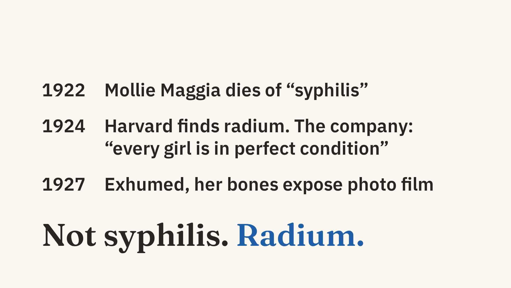
It was not syphilis. It was radium.
Too Weak to Raise a Hand
Grace Fryer had painted dials since she was 18. She lost her teeth, and in time she needed a brace to sit up. It took her two years to find a lawyer who would take on the company. In 1927, she and four other women sued. At their first hearing, in January 1928, two of them were in bed, and none could raise an arm to take the oath. They settled that year: $10,000 each, $600 a year, and their medical bills. Grace Fryer died in 1933.
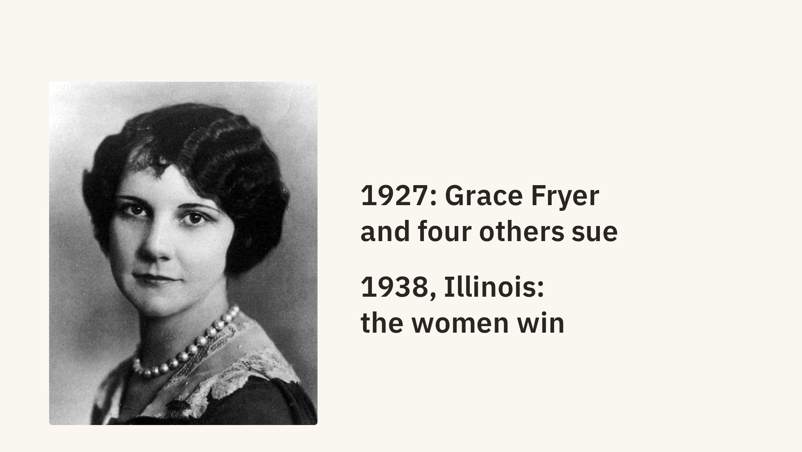
In Ottawa, Illinois, the dial painters of the Radium Dial Company sued too. Catherine Donohue was too ill to travel, so in 1938 the hearing came to her home. The women won, and in 1939 the Supreme Court refused to hear the company’s appeal. Donohue did not live to see it. Cases like theirs helped to establish the right of a worker to sue a company for damages from abuse at work.
At MIT, Robley Evans measured how much radium the painters’ bodies held, and what it did to them. In 1941, his data set the first limit for radium in the body: a tenth of a millionth of a gram. Later limits, for plutonium among others, were set from it.
Corporate abuses like these led to modern labor laws, and to the creation of OSHA, the Occupational Safety and Health Administration, in 1970.
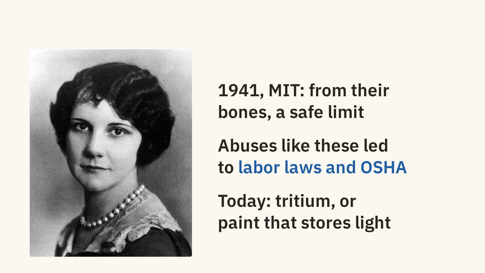
Radium was phased out of watch dials in the 1960s. Tritium took its place: a form of hydrogen with two extra neutrons, whose weak radiation a watch’s glass stops. Today most watches glow with a paint that stores light and gives it back in the dark, with no radiation at all. So tonight, look at your watch in the dark.
Questions?
Thank you for reading. Here are some great songs about time:
- “Rock Around the Clock,” by Max C. Freedman and James E. Myers
- “My Grandfather’s Clock,” by Henry Clay Work
- “The Windmills of Your Mind,” by Michel Legrand, Alan Bergman and Marilyn Bergman
- “Time,” by Pink Floyd
- “Clocks,” by Coldplay
- “Does Anybody Really Know What Time It Is?” by Chicago
- “Time After Time,” by Cyndi Lauper
- “TiK ToK,” by Kesha
- “Stay,” by Zedd and Alessia Cara
- “In the End,” by Linkin Park
- “4 Minutes,” by Madonna, with Justin Timberlake and Timbaland
- “Lose Yourself,” by Eminem
The painting of John Harrison is by Thomas King, about 1767, and is in the public domain. The photos of H1, H2 and H4 are by Mike Prince, and the photo of H3 is by Tony Hisgett, all under CC BY 2.0. The photos of the dial painters, about 1922, and of Grace Fryer, 1925, are by unknown photographers, and are in the public domain.
_01.jpg){kind=link}
.jpg){kind=link}
.jpg){kind=link}
.jpg){kind=link}
.jpg){kind=link}
.jpg){kind=link}